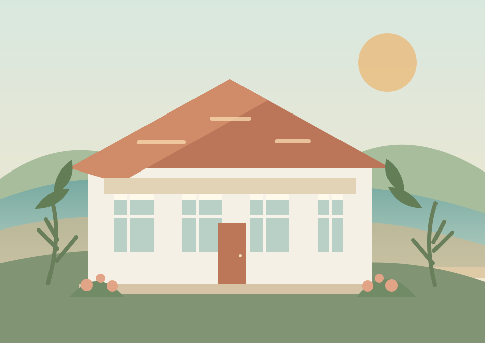

Μια αγκαλιά φροντίδας
στην καρδιά της Λέρου
Ένας τόπος αγάπης, σεβασμού και καθημερινής φροντίδας για τους ανθρώπους της τρίτης ηλικίας.
Επικοινωνήστε μαζί μας
Ένα σπίτι γεμάτο φροντίδα
Στο Εκκλησιαστικό Γηροκομείο Λέρου, η φροντίδα ξεκινά από μια ζεστή καλημέρα. Με σεβασμό στην ιστορία και την προσωπικότητα κάθε ανθρώπου, δημιουργούμε μια καθημερινότητα με ασφάλεια, συντροφικότητα και χαρά.
Αγάπη
Φροντίδα με ζεστασιά και αληθινό ενδιαφέρον.
Αξιοπρέπεια
Σεβασμός στην προσωπικότητα και τις ανάγκες κάθε ανθρώπου.
Συντροφικότητα
Μια οικογένεια, με χώρο για όλους.
Τα νέα μας
Η πόρτα μας είναι πάντα ανοιχτή.
Επικοινωνήστε μαζί μας για μια επίσκεψη ή για οποιαδήποτε πληροφορία.
Βρείτε μαςΤα νέα μας
Οι χώροι μας
Φωτογραφικό υλικό
Επικοινωνία
Προστασία προσωπικών δεδομένων
Ο ιστότοπος είναι ενημερωτικός και δεν χρησιμοποιεί διαφημιστικά cookies, εργαλεία παρακολούθησης ή υπηρεσίες ανάλυσης επισκεψιμότητας. Η επιλογή απόκρυψης της ενημέρωσης cookies αποθηκεύεται μόνο τοπικά στη συσκευή σας. Η φόρμα επικοινωνίας και η συλλογή προσωπικών δεδομένων δεν είναι ενεργοποιημένες σε αυτόν τον ιστότοπο.
Για να δημοσιευτεί η σελίδα, συμπληρώστε και ελέγξτε τα επίσημα στοιχεία του υπευθύνου επεξεργασίας, τα στοιχεία επικοινωνίας και κάθε πρόσθετη ενημέρωση που απαιτείται για τη λειτουργία του ιδρύματος. Το κείμενο αυτό είναι υπόδειγμα και χρειάζεται έλεγχο από τον αρμόδιο φορέα.